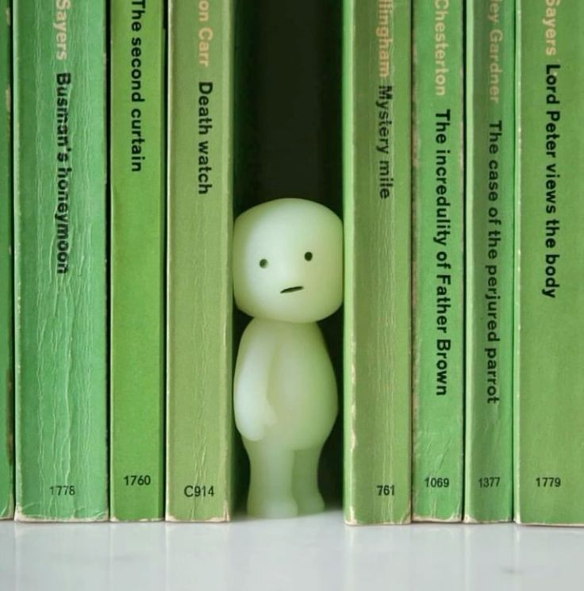

What Are Smiskis?
Why did they take over the internet?
Smiskis are small, glow-in-the-dark collectible figurines from Japan that have become popular for their unique charm and whimsical concept. Created by Dreams Inc., these tiny humanoid characters are only a couple of inches tall and are designed to look like little companions hiding around your home. Each figure is sold in a blind box, so collectors never know which specific pose or character they’ll receive until they open it, adding an element of surprise and fun to collecting.
The main idea behind Smiskis is that they’re shy, playful beings who secretly inhabit corners, shelves, plants, and other hidden spots, quietly glowing at night and keeping you company without being too obvious. Their glowing feature makes them especially appealing, since after absorbing light, they emit a soft, calming glow in dark spaces. Over time, Dreams Inc. has released multiple themed series such as Smiski Living, Smiski Bath, Smiski Yoga, and Smiski Dressing, each with different poses that fit the theme. Their cute, minimalist designs make them popular among fans of Japanese “kawaii” culture, as well as people who enjoy decorating small spaces with quirky items. Smiskis combine the joy of collecting with a cozy, magical aesthetic that feels both playful and comforting.